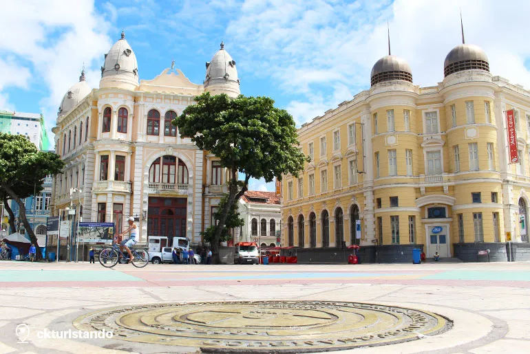
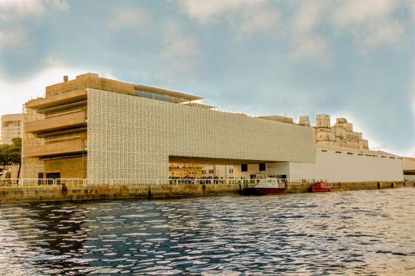
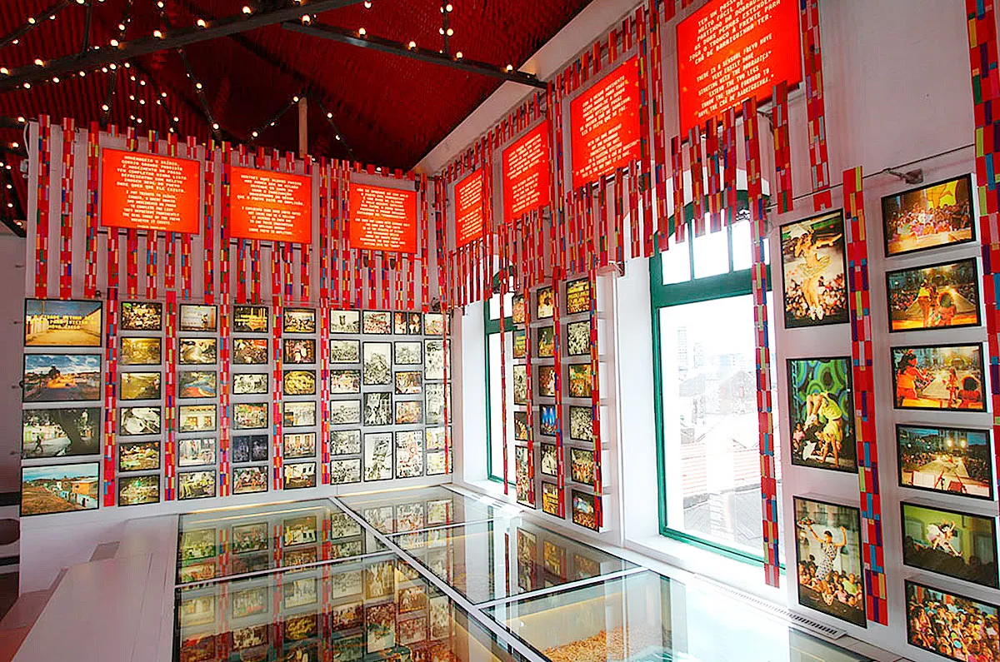

A Praça do Marco Zero é um dos pontos turísticos mais famosos do Recife Antigo. Localizada às margens do Rio Capibaribe, é conhecida como o centro do Recife e é o ponto de partida para muitos turistas que exploram a cidade.
O Cais do Sertão é um museu interativo que homenageia a cultura e a história do sertão nordestino e do artista Luiz Gonzaga. Os visitantes podem explorar exposições interativas e aprender mais sobre a rica cultura sertaneja.
O Paço do Frevo é um espaço cultural dedicado ao frevo, um dos estilos de música e dança mais emblemáticos de Pernambuco. Os visitantes podem aprender sobre a história e a tradição do frevo e até mesmo participar de aulas de dança.
